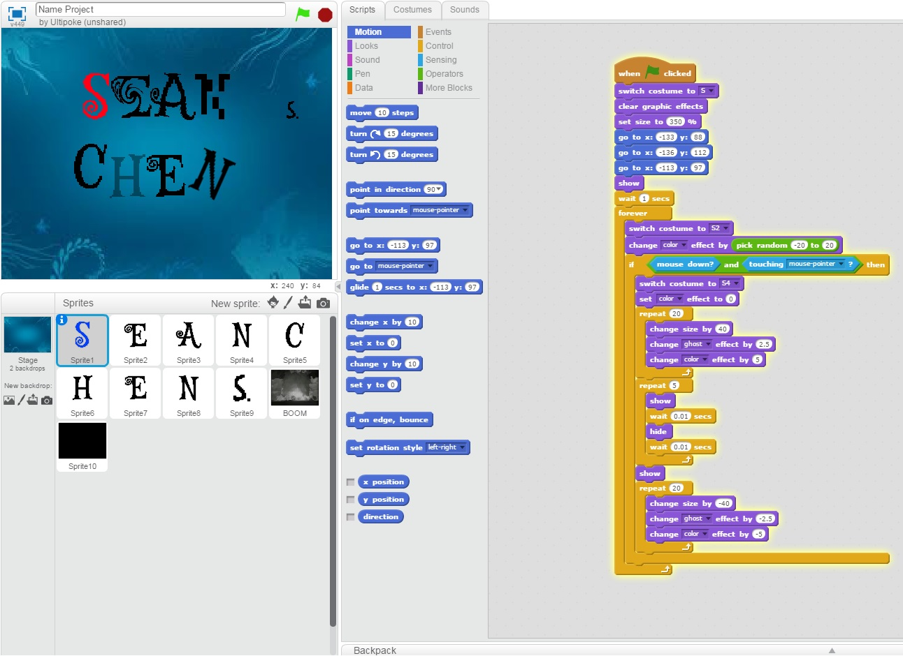
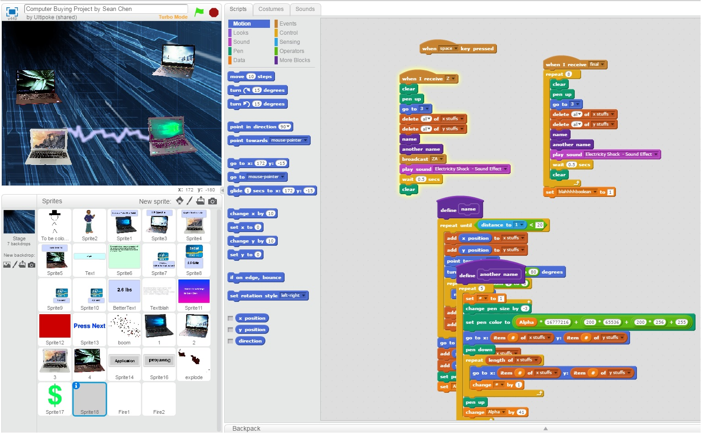
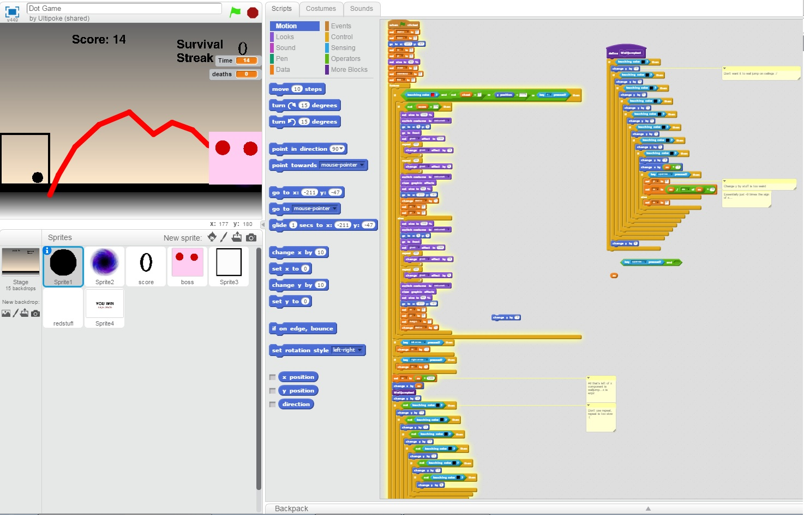

Name Assignment

Description:
I used Scratch to design and create a program that shows my name. The requirements were to add a sprite for each letter in my name and give them at least three unique behaviors. The program needed to run when the green flap was clicked and for extra credit I added a function to reset everything when the green flag was clicked.
Concepts Learned:
- How to use event blocks
- to use loops to repeat actions for a certain amount of time or when a condition is met
- Using conditional statements like if to check if things are true
- Creating and finding sprites from different resources
- Moving sprites by changing the x and y values.
Computer Buying Project

Description:
I used Scratch to create a presentation about weighing advantages and disadvantages to choose a computer that would best suit someone that was interviewed about his preference. We did interviewed someone that we know to obtain criteria and constraints, and did research to find computers that meet the constraints and which of the four chosen computers would be ideal. I also added an animation to show the 4 computers fighting each other to make the presentation more entertaining.
Concepts Learned
Final Project

Description:
The final project was supposed to be a story or a game. I decided to create a game, and the game needed to count the score, time, let the player know when they win, and have levels that get harder. I created a platformer game with multiple levels and a bossfight.
Concepts Learned